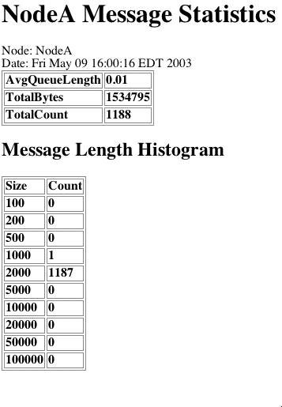

Message Statistics Servlet
|

|
- AvgQueueLength
- Average of the number of messages waiting on all Destination
Links. The average is calculated using a decaying average
- Total Bytes
- Count of the number of bytes set from all agents on this
node. This statistic does not include inter-node messages,
which are not serialized
- Total Count
- Count of Messages sent from all agents on this node. This
count includes both inter-node messages and intra-node messages
- Message Length Histogram
- Count of Messages sent from all agents on this node,
organized by size. The bins are labeled by the max size in
the bin